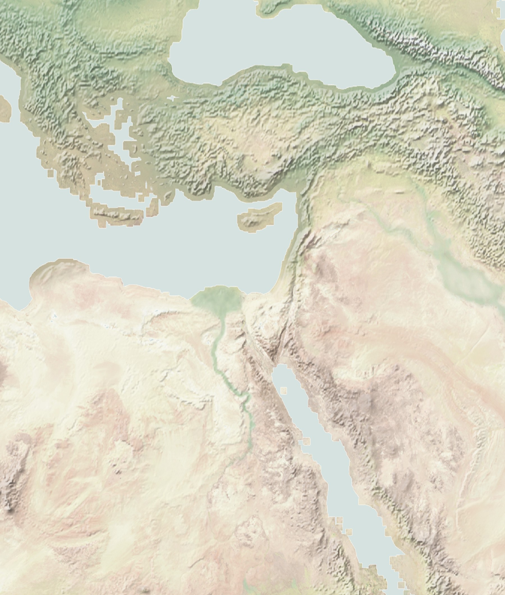

Natural Earth II — 레반트 지형

Natural Earth II with Shaded Relief, version 3.2.0, public domain. JudeBible용 지역 자르기 및 투영 변환. 이 지형 이미지는 독립 참고 이미지이며, 검증되지 않은 성경 이동 경로를 표시하지 않습니다.
성경 주석 원문 열람
영어 원문을 책·장별로 탐색합니다. 번역·주해·전문 승인된 한국어 Reader로 표시하지 않습니다.
출처·라이선스·변경 사항
Tyndale Open Study Notes © 2022 Tyndale House Publishers. CC BY-SA 4.0. 공식 자료. XML 원본의 설명을 책·장별 단순 텍스트로 추출·재구성했습니다.
unfoldingWord Translation Notes © 2022 unfoldingWord. CC BY-SA 4.0. 공식 원본. 원본 TSV의 Note·Quote 필드를 책·장별로 색인화했습니다. 상표와 로고는 포함하지 않았습니다.
Creative Commons Attribution-ShareAlike 4.0. 자료 문단은 변경·가공된 부분을 포함하므로 적용되는 동일조건변경허락을 준수해야 합니다. 이 참고자료실은 JudeBible 내부 WORBS 원고나 제3자 미승인 자료의 공개 승인으로 간주하지 않습니다.